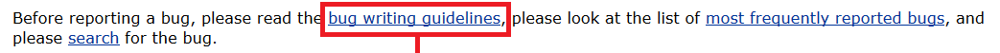

Bugs melden
Ook niet-programmeurs kunnen meehelpen om de OpenOffice.org software te verbeteren, bijvoorbeeld door problemen te melden aan de ontwikkelaars! Hier wordt doorgaans serieus op ingegaan, en het is indrukwekkend om te zien hoeveel verbeteringen er op deze manier al zijn aangebracht sinds de start van het project.
Wat is Bugzilla?
Bugzilla houdt bij hoe de gemelde problemen worden opgelost. Deze pagina helpt je verder op weg.
Het Engelse woord "issue" betekent in dit verband "kwestie" of "probleem". Als je in Apache OpenOffice.org tegen iets aanloopt waarvan je vermoedt dat dit voorkomt uit een fout of onvolkomenheid in de software, kun je een "issue" indienen. Je kunt ook suggesties doen voor verbeteringen om bijvoorbeeld het gebruiksgemak te vergroten.
Wat heb je nodig?
De voertaal van Bugzilla is het Engels, dus het helpt als je enige kennis van die taal hebt :)
Je moet je geregistreerd hebben als gebruiker van OpenOffice.org.
Daardoor is je e-mailadres bij het systeem bekend, zodat je op de hoogte wordt gehouden
van de voortgang van jouw issue.
Je moet bovendien zijn aangemeld (ingelogd).
N.B. Je browser moet daarvoor cookies accepteren.
Zoeken naar een issue
Er is natuurlijk een behoorlijke kans dat iemand anders hetzelfde probleem is tegengekomen en het ook al heeft
gerapporteerd. Het kan dan zijn dat het al opgelost is in de eerstvolgende te verschijnen versie,
of dat de issue een manier vermeldt om het probleem te vermijden.
Om hier achter te komen is er de zoekpagina
van Bugzilla. Er wordt weleens geklaagd dat die er te ingewikkeld uitziet. Met de tot een minimum
vereenvoudigde versie hieronder kom je echter ook een heel eind!
Vul in het onderstaande vak enkele (Engelse!) woorden in voor een simpel type zoekactie
zoals je dat kent van internet zoekmachines, en klik daarna op de knop. Dit brengt je naar de
eenvoudige zoekpagina van Bugzilla waar je nog slechts op "Search" hoeft te drukken
De resultaten worden in een nieuw venster getoond zodat je het vervolg van deze beschrijving erbij kunt houden.
Indienen van een issue
Als in het getoonde lijstje geen bugs worden beschreven die kennelijk overeenkomen met jouw issue, kun je verder gaan door op "New" te klikken. Je krijgt dan het volgende te zien:

Geef hierin aan op welk onderdeel van OpenOffice.org je denkt dat het probleem betrekking heeft. Als je het niet zeker weet is dat overigens niet erg! Kies gewoon wat er het meest op lijkt. Hierna kun je de issue gaan invoeren:
Toelichting:
- 
Klik op de link "Bug writing guidelines" (zie rechthoek) voor meer informatie over het schrijven van een issue. Lees bijvoorbeeld de "issue writing guidelines" voor het schrijven van een goede issue. - Product: is reeds ingevuld door de eerdere keuze.
- Component: biedt de beschikbare opties aan die afhankelijk zijn van de keuze die bij Product is gekozen. In het venster ernaast wordt een omschrijving van de component gegeven. Indien u hier een mogelijke keuze verwachtte maar is die niet aanwezig, dient u waarschijnlijk uw keuze onder Product aan te passen.
- Version: Geef hier de versie van OpenOffice.org aan waarop de issue betrekking heeft.
- Severity: Geef de prioriteit aan. Doorgaans kun je het best de standaardwaarde Normal laten staan en de ontwikkelaars de prioriteit laten kiezen. Als je deze aan wilt passen, klik dan eerst op de link om te lezen wat de betekenis van "trivial" t/m "blocker" is.
- Hardware: Kies hier het platform. Indien op meerdere platforms van toepassing, kies dan "All".
- OS: Geef het OS aan. Indien onder meerdere beheerssystemen van toepassing, kun je hier ook "All" kiezen.
- Summary: Geef hier met weinig woorden zo duidelijk mogelijk aan waar de issue over gaat.
- Description: Geef hier zo goed mogelijk uitleg over de issue. Probeer zoveel mogelijk informatie te geven die voor de ontwikkelaars van belang kan zijn: aanwijzingen hoe ze het probleem zelf kunnen oproepen, welke acties je hebt uitgevoerd om erachter te kunnen komen waar het probleem precies ligt, etc.
- Submit bug: Klik op deze knop om de issue te verzenden.
De overige velden hoeven in principe niet te worden aangepast.
ATTENTIE: voordat je op de knop "Submit bug" klikt, verdient het aanbeveling om de beschrijving te kopiëren naar een tekstbewerker of iets dergelijks. Het komt namelijk soms voor dat je zoveel tijd nodig hebt om de beschrijving te formuleren dat het systeem denkt dat je weg bent en je heeft uitgelogd. Log dan opnieuw in, open opnieuw een issue, kopieer de beschrijving terug, vul de rest van de velden in en klik opnieuw op "commit".
Bestanden toevoegen aan de issue
Hiermee ben je in principe klaar. Als je echter een bestand hebt waarmee het probleem te demonstreren is, kun je dat bij de issue voegen door op de knop "Add attachment" te klikken. In dat geval zie je onderstaande:
Toelichting:
- Geef de padnaam van het bestand, of gebruik de knop "Bladeren..." om het bestand via een dialoogvenster te selecteren.
- Geef een korte beschrijving van het bestand.
- Klik op de knop "Submit bug" om de issue met het bestand te verzenden.
Wat gebeurt er verder met de issue?
Je wordt automatisch via e-mail op de hoogte gehouden van de ontwikkelingen. Als je later nog eens naar je issue wilt kijken of er iets aan toevoegen, kun je na inloggen in je browservenster op "My Issues" klikken voor een overzicht.
Tenslotte nog dit:
Als je een Nederlandstalige build van OpenOffice gebruikt, kan een beschrijving in het Engels problematisch zijn, omdat het vaak niet voor de hand ligt hoe de menu's, dialogen etc. in het Engels heten. Hiervoor kan de Nederlands-Engels OpenOffice.org Glossary behulpzaam zijn. Je kunt deze inladen in OpenOffice.org en de overeenkomstige Engelse termen erin opzoeken.
Intro
Nieuws
Software
Beschrijving
Nieuw in 4.0.0
Downloaden
CD-ROM
OOo
Achtergronden
FAQ
Begrippenlijst
Hulp
Mailinglists
Gebruikersforum
Documentatie
Tips&trucs
Meehelpen
Projecten
Bugs melden
Contact
Mailinglists
Wie zijn wij?
Overig
Links
Licenties